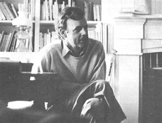

If you've never heard of Wendell Berry, it's probably only because the man hasn't been too worried about becoming famous. It's a certainty, however, that Berry's work as a farmer, neighbor, citizen, activist, teacher, poet, novelist and essayist is one of those rare collections of experience that touches each of us deep in our own lives.
Wendell lives - by deliberate choice - on a Port Royal, Kentucky farm that he considers his "rightful place in the world " ... but he does not allow this strong sense of location to draw a curtain of provincialism across his view of life.
Instead, Berry seemingly manages to devote the full measure of his attention both to the well-being of his family and community and to the matters which affect and afflict the whole earth. His concern alternates, as he says, between "the doorstep and the planet".
Wendell Berry's anguish about the greed and hate that too often blight the human spirit, and the warm pleasure that he takes in the earth's natural beauty are captured -t o varying degrees - in his five volumes of poetry, four books of essays and three novels. Berry's devotees particularly recommend The Unforeseen Wilderness, about a journey by canoe and foot through the intricate delights of a lovely river gorge threatened by "progress"; The Hidden Wound, an accounting of his own heritage of racism; Farming, A Handbook, poetry not "incompatible with barns and gardens and fields and woodlands"; A Place On Earth, Wendell's richly textured and warmly moving second novel; The Long-Legged House, and A Continuous Harmony, hooks of essays ranging from his indictment of strip mining in Kentucky, to "A Statement Against The War In Vietnam" to his attempts to discover the importance of his ancestors in bringing him to the place where he is today. Wendell's "language of permanence" in his most recent book of poetry, The Country Of Marriage, and his reviews of Farmers Of Forty Centuries and An Agricultural Testament in the Last Whole Earth Catalog are also warmly mentioned in any gathering of Berry followers.
Wendell Berry - a man who increasingly seems to articulate the hopes and fears and dreams of people committed to a saner world - rarely grants interviews. He not only agreed to the following exchange with Bruce Williamson, however, but sacrificed much personal time and energy to make sure that the conversation - and the article which resulted from it - was as informative, concise and precise as possible. Here, then, is Wendell Berry ... exactly as Bruce Williamson found him in the study of his Port Royal, Kentucky home.
Mr. Berry, for some time now you've been writing about the meaning of farming in your own life and its importance to the modern world ... and more and more people seem to be coming around to your point of view. Do you think that small-scale farming is finally being reaccepted as a viable and necessary contribution to the stability of both urban and rural life?
I'm not sure. When I first started saying that it was important just to grow a garden, it seemed really risky stuff to me. You can defend farming on an aesthetic basis and say it's a great thing to go off into the country and breathe good air and lead a healthy life and grow your own vegetables. That's really nice, really lovely. But to get on from there and say that you can learn things of great practical, moral and spiritual importance from doing it - that's still going to take a while.
Why?
It has to do with a breakdown of our language, the way we talk about farming. Our culture today is mainly embarrassed about country things. It no longer realizes or wants to realize that its life still must come from the ground. We can't speak to farmers anymore about their value to us. They no longer have a model or a place that they can look to outside themselves, and say, "Yes, there's a vision of the kind of person I'd like to become." Instead, they turn on the television and see a show like "Green Acres" which represents them as negligible and comical. Back in the works of some of the old writers like Homer and Hesiod and Virgil and Chaucer there's real knowledge of the worth of agriculture and it's combined with high art and theology and love and everything else. Farming's right in there. They didn't have to apologize for it.
That kind of respect was based in part on proximity ... being physically close to the process of farming. Isolated in a technological society as many of us now are, however, it's not surprising that we often lose the ability to see the beauties of a life close to the land.
I'd like to get people back in touch with the realities of a farming life. There's a great argument going on today about whether or not the family farm is going to survive or should survive. This argument is extremely important, but it seems to me that all the talk about productivity and markets and feeding the hungry is secondary. The primary concern has to be with the cultural relation between people and land.
We need to be talking about the family farmers who live on and care for small tracts of land out of the motivation that long association and deep knowledge can produce, people who know the difference between duty and love. We need to know what that kind of spirit means for a person as well as a place, and then we'll begin to understand the practical value of the family farm.
In terms of what you've called the "love that enforces care?"
It's love that keeps you walking over a place and it's love that makes you imagine what can be done on it. More and more since Tanya and I have lived on this farm, our life has been taken up with imagining what would be possible. And we'll be involved in that until we die, or until our energy plays out. Our life here has developed in response to this place and the potential in it. By now we've realized some of it, but the most exciting thing is that we know we haven't realized very much of it.
But you let the possibilities grow and mature slowly instead of trying to do everything at once.
That's right, and then you start to make it real. Then you begin to make mistakes too, because that's part of it. I don't know the trees I've set out here and had to dig up because something we didn't foresee happened. But that's part of what you mean by organic. We could have gotten a landscape architect to come here and put this place together - and then we could have lived here like inmates. But we're living here the way we live inside our skin; it fits us and as we change it changes.
And yet some experts would call this hillside farm "marginal land."
Land like this - and there's a lot of it on both sides of the river here - seems to me to be important because of what it tells us about the limitations of our agriculture. This land is not suited for agribusiness or even the highly mechanized family farm. Much of it was abandoned because of bad farming methods, and it stays that way because our economy won't permit the kind of farming it requires. But cared for in the right way, it has a tremendous agricultural potential and is extremely responsive land. An Italian or an Oriental peasant would see abundance here and would achieve abundance.
Then why aren't such labor-intensive methods being used?
It has to do partly with the kind of work most people will do anymore. I think we're developing a society now whose dominant effort is to get out of work. It's probably a measure of our decadence that we can talk about a "work ethic." Work isn't an ethic, work's a necessity.
The agricultural experts have a dream and every now and then you see a magazine article that projects it. Here's a farmer sitting up in a glass-enclosed tower, with a console of buttons and instruments in front of him. He's clean, he doesn't have any dust or sweat on him. There are no bugs crawling down his neck or chaff falling down the collar of his white shirt. Out there in the field are all these menial machines, scurrying about doing his bidding. He's our ideal of a good man, too good to work.
But everybody who's ever worked with machines knows they're the most frustrating things going. At certain times not appointed by any expert those robots are going to stop. And it's going to be in the middle of a hot humid July day, and that farmer's going to have to leave his air-conditioned cubicle and go out there and crawl under the machinery in the dirt and grease, and sweat and fume and curse and get it running again.
On the other hand, an Oriental farmer - at least those described by F.H. King in Farmers of Forty Centuries - takes the time to really care for his land, and can get much more productivity from it.
That's because he uses every resource available to him and wastes nothing, not even his own excrement. Human wastes are excellent fertilizer when composted properly.
I understand you can speak on that subject from personal experience. You have built your own composting privy, haven't you?
Yes, although we aren't using the compost on any food crops until we've worked with it for a while and are sure of it. We do put the compost on ornamentals and young trees and it's good stuff.
For us that privy has solved several practical problems. We ha a limited water supply from our well and a poor soil for a septic tank system, and we also wanted to stop the effluent from getting into the river. Of course, there are other reasons. In An Agricultural Testament, Sir Albert Howard talks about bringing growth and decay into balance. Our society is interested in growth and production but isn't really interested decay at all. And as long as it doesn't get interested, its excrement and garbage will just remain a nuisance and a danger and never become part of that cycle everybody's talking about.
It's certainly much easier to gabble about our "sewage disposal crisis" ... while we keep right on flushing the toilet. Do you think most people - people in this country anyway - are really willing to alter their habits that drastically? Can we become realistic enough to swap our flush toilets for composting privies?
There's a state of mind that has to accompany a change like that. The American mind has been schooled for years to think that you oughtn't to spend time on any regular basis on anything that isn't glamorous. And you especially oughtn't to have to spend it turning manure piles in a composting privy. But once you become willing to involve yourself in the kind of discipline and faithfulness it takes to see to jobs like that when they need to be seen to, then it seems to me you're getting away from the sickness that afflicts the society everywhere and going to work on some kind of cure.
That still sounds pretty idealistic!
Well, I have an American head like everybody else and there are times when it seems there are better things for me to be doing. Anything you go into regularly is going to lead to a certain amount of disenchantment. The first time you ever clean out your privy, you're going to go down there with great enthusiasm and really throw that stuff out of there. It's going to be a great thing to do. But about the fifteenth time you've got to do it it's going to be raining or you're going to be in a hurry and you're going to think to yourself - maybe you're a writer - "I could be writing, but here I've got to clean out this old privy'."
There are many chores on a working farm that require that kind of discipline.
It's like having a milk cow. Having a milk cow is a very strict discipline and a very trying circumstance. It means you've got to be home twice a day to milk whether you want to or not, or else the cow will be ruined. Some days you'd rather do anything than go down to that barn and maybe some days you go and you're kind of bored with it. But other days it's a most rewarding thing and you realize that you get the reward and happiness of it because you stuck to it when it wasn't rewarding. There's some kind of wisdom in that fidelity, when you can say, "All right, every day ain't going to be the best day of your life, don't worry about that. If you stick to it you hold the possibility open that you will have better days."
But when people make a commitment to farming, won't their attitude toward the work make it more rewarding?''
If by attitude you mean enthusiasm, then I'm not so sure. I think the popular drug culture and certain aspects of the peace and environment movements have led people to believe there's a great deal you can do with enthusiasm. I have a lot of enthusiasm, but I know how far it will get me. It doesn't last until dark when you've got a full day's work, or three or four days' work, to do in a day. If you get all the way to dark and to the end of the job, then you're going to be operating on something else.
A lot of people have assumed that the main work in changing over from an urban to a rural life is to get out of the city. That's hardly the start. Learning farming is like learning an art; it takes a long time, and a lot of careful work. And we've failed to teach the young people to expect that a worthy thing might be difficult to learn.
Yet many people are willing to make a very serious commitment to the land ... investing their money and their hopes in the ideal of an independent life.
Yes, but it seems to me that they shouldn't try to be too pure. That is, to throw over a well-paying job - and training that prepares you for some kind of profession - and go back to the farm and attempt to survive there under conditions that are destroying a lot of experienced farmers. That might be a dangerous thing to do unless you know very well what you are doing and are young. I think it's worthwhile to support your farm by some other work. It's worth it to keep your hands on a piece of land and to keep that part of your life away from the corporations and the speculators and the fools.
If we were willing to isolate ourselves, we could have a lifestyle here that would make us a lot more independent of power companies and machines than we are now. It would also keep us from being useful as strip-mine opponents and airport opponents and that sort of thing.
Airport opponents?
The Jefferson County Air Board wants to build a jetport on 22,000 acres of good farmland in Henry and Shelby Counties. We've been watching those airport people for a couple of years now, seeing what they were up to and getting ready to move when the site plans were announced. We've already had some meetings.
This airport fight is the largest direct action on the part of the people in these counties for years. And as long as the project lasts I think there'll be people to fight ii, because we all have a stake in what's going on. There are a lot of people here who would do a great deal to defend the soil under their feet in Henry and Shelby Counties. It seems to me that this supports my belief that a lot depends on a stable community.
How would you define a stable community?
You've got to have people who talk to each other a lot and who have experiences in common. In a settled farming community old friends get together to work and one thing they do is tell each other again the stories they already know. This is a complex community function. They celebrate their old acquaintance in that way, they celebrate themselves. They alert each other to the realities of their lives and their history. And the effect that it has on story-telling is that it improves the stories.
But the stories in the media today cater to the wish people have for everything to be new. That's very much the emphasis in our arts today, for example. That's not different at all from the Madison Avenue ideal that thrives on the establishment and immediate wearing out of fashions and fads. Any culture building itself on this kind of novelty is bound to run thin.
In the face of that kind of cultural pressure, it takes a conscious effort to reinstate the ceremony and ritual in our lives. Many intentional communities are trying to generate this kind of awareness and stability ...
But I'm much more interested in the results of accidental communities that have formed by fate and fortune and circumstance. The intentional community seems to me a rather escapist idea, sort of a new version of the white citizen's council. I thought that's what we were trying to get away from. I think the idea that you can have an intentional community is about as misleading as saying you can have an intentional life. If you're going to have a decent and stable community, you've got to produce the cultural and social forms by which to deal with the unexpected and the undesirable. The intentional community idea assumes that when you say love your neighbor as yourself you have some kind of right to go out and pick your neighbor. I think that the ideal of loving your neighbor has to take on the possibility that he may be somebody you're going to have great difficulty loving or liking or even tolerating.
In your writing you emphasize that the inhabitants of a region thrive on the daily interchange between old and young ... yet many of these new communities are made up primarily of young people.
Yes, and that's one of the worst possible kinds of segregation. This is probably the first generation not to have a history. They have their own immediate history but not one that comes from having older people around them. They're coming up to adult life without the awareness that anyone has ever gone through their experiences before, much less learned anything from them. But I know people who as children had their grandparents' memories in their memories, so that in a sense, as young people they had old minds. They had a kind of seasoning.
You certainly talk about your own childhood in that way.
That's right, although I can't say that I've always agreed with all the older people I've grown up around. I've had the same struggles with them as most people who grow up. Nevertheless I owe a great debt to my elders and I agree with all of them on something or other. I think that my knowledge of them and my association with them has given me a sense of what is possible.
There's a sort of gift to humanity that each generation of young people renews. They feel in their bones what's desirable. "It would be great if we could be free." And the function of older people in the society is not to oppose that, but to qualify it. To say yes, it would be great to be free ... but there are certain ways to get free that are going to surprise you and make stern demands on you. The man who is most able usually turns out to be the man who's most free, not the one who's the most reckless. The old are the ones who will put their hands on you and say, "Well, be a little steady now," or "No, you can't quit, you're not finished yet."
Have you reached that role yourself?
Well, my own history as a teacher has had a rather dramatic change along those lines. Back when we were making speeches and holding meetings about the environment and against the Vietnam War, I was sort of looked on as a friend of the good causes. Then last year we had a long struggle in the university about academic requirements. I was holding out for the importance of learning a foreign language, for instance, and overnight I got the reputation of being an "academic fascist." But I would be a lot better off if I knew more languages, and more math and biology, too. That's the message I got from my own experience.
Here it seems to me you have a strange thing. You have young people who want world peace but don't want to learn anybody else's language. A young fellow came up to me after one of those meetings and said, "I've never had a foreign language and I want you to tell me why I should take French. I'm studying agriculture, not literature." "Well," I said, "if you don't know, I can't tell you. That's why you take French for two or three or four years, to learn why you should take it."
The fact is that a great deal that's necessary and satisfying to know is not pleasant to learn. So-called educators have allowed the idea to get around among students that education ought to be constantly diverting and entertaining. That's a terrible disservice to reality. And students then feel affronted by the hardship that's native to education and to the mastery of any discipline.
It's true most educators are jumping on the "relevance" bandwagon. And yet a less didactic approach is certainly appealing to the young person who wants to try new directions in learning.
What I'm saying is that the young have had lots of praisers and lots of detractors but few critics which is really a way of saying they've had few friends. A curious phenomenon of the youth culture thing - and it's full of curious phenomena - is these old sycophants who hang about its skirts and try to touch and kiss the hem of its garment. We see white-haired old men stand up at the university and abdicate their responsibility to the young on the grounds that they (the teachers) have not received the word of God.
Charles Reich is one of the best examples I know of a teacher who's copped out completely by becoming a sycophant of his students. I mean I'm completely against this idiocy of his that says surfboarding is an acceptable way of life. That's utterly absurd. The Greening of America is full of false apologies and excuses for people's failure to be responsible. Surfboarding is not a way of life. People are free to think it is because the care and responsibility for society has been broken up and parceled out to the experts. People who make a life of surfboarding are living off other people. They're leeches of the affluent society. They're parasites of a parasite. As long as we have people making some kind of amusement a way of life, you'll find they're getting their support from something destructive, like strip-mining or needless "development" or war-making.
The most frustrating aspect of this is that the cycle seems so hard to break. We're all parasites in one way or another.
The only, way I can see out of the predicament we're all in is to promote that old ideal of personal independence. I don't mean the kind of independence that makes people act without regard for other people or that makes them assume they can get along without other people. I mean the independence by which a person provides some of his own needs and which permits him to do what he sees to be right without the approval of a crowd. That's why Thomas Jefferson said you need to keep as many people as possible on the land. That's necessary for a democracy. You need to keep people independent in the way that the ownership and care of a piece of land can make them.
If the ideals and aims of young people have lost energy it's because they haven't the stability of a commitment to one place and one community. I think they're disposed to drift around until they find a suitable community. But no community is suitable. There's plenty wrong with them all. I could construct an airtight argument for not settling in my own community. The fact is that I'm spending my life constructing an argument for being here.
In the sense that you don't plan to ever move away from Port Royal, Kentucky?
Yes, and we had something happen here not too long ago that kind of served as a test of that decision. We'd been here since 1964 and in that period of time we'd sort of solved a whole set of problems that faced us when we started. We'd become almost self-sufficient as far as food was concerned, and had begun to understand the significance of this place in our lives and in the life of modern America. Suddenly the farm next door to us was sold to a developer. He brought in bulldozers and dumped tons of gravel onto the land to make it, some kind of ideal landscape for a trailer court. The machines were roaring and real estate speculators were coming around talking about a hundred lots for house trailers and vacation cabins. We could see the smoke from our neighbor's fire, so to speak; we could see the dust from his bulldozer and we could see his signs.
One of our first thoughts was that we would leave, we wouldn't put up with it, we'd get out of here and go someplace where it was quieter and where we could live the way we wanted to. We'd go west, as they used to say. And then we realized that that impulse went against the current of our lives up to that point.
A farmer, who's a neighbor of mine and probably the oldest friend I've got in the world, had told me, "They'll never do worth a damn as long as they've got two choices." That's the most important thing that's been said to me in the last couple of years. It illuminates the meaning of marriage. When you believe in a thing enough so that you eliminate the second choice, forsake all others, then you're married to it. So we decided that this place would have to be our fate and that we'd stay here no matter what happened as long as life was possible. That decision changed us and became a kind of metaphor of our own marriage. Since then, life on this place has had a much different and fuller meaning for us. (EDITOR'S NOTE: Soon after this interview the Berrys were able to buy the threatened land next door to their farm and are now doing what they can to repair the damage done to it.)
I like that concept of marriage ... commitment to a place as well as to a person.
My friend Ken Kesey was here the other day and we were talking about the willingness to make marriage and the importance of that willingness in any kind of credible maturity in a man or a woman. My mother's parents' marriage was a good one and they lived long enough after Tanya and I were married for us to see that it was and to get lots of strength from it, a kind of inspiration. We learned a great deal from them about a certain kind of goodness.
That's one difficulty that today's marriages are laboring under - the failure of any good marriage to communicate its existence to any other. Tanya and I have felt this a whole lot. Marriages are crashing down all around us. We feel like the trees in a logging woods - who's going to be next?
Separation and divorce and estrangement are certainly characteristic of our "modern world."
It's very much a failing of the whole society. Our culture finds it impossible to deal with the kind of love that keeps a community together and stable. It's embarrassed about domestic happiness and grief. And about any show of genuine feeling and love between men. I don't mean love in the sexual way but in the familiar open freehearted way that would let a man give another man a big hug. My family is always hugging a whole lot, and I'm for hugging. I grew up here around men who weren't afraid to touch each other. When I was a boy, older men were always touching me and patting me. I was pretty skinny and they'd squeeze my leg and say, "Boy, does your leg swell up like that every summer?" There was a great goodness and good-heartedness in that and no meanness at all.
That kind of openness and friendliness does seem more characteristic of the country than the city. Having neighbors like that can make a big difference to a newcomer in an area.
Sure it can. People who are moving out into the country ought to keep that in mind. They can learn a great deal from their neighbors about conditions of the ground, for instance, and how to work it at certain times. Most people are willing to give that advice. To go into a place and base everything on an assumption of your moral and intellectual superiority to your neighbors seems to me to be the most insulting thing you can do. And it cuts you off from the very things you need to know.
If you're really going to neighbor, you go to them when they need you, and when you need help you call. Two brothers who live up the creek and another friend and I have known each other pretty near always, and we exchange work all the time. We don't keep books. I do all I can for them. They do all they can for me. And it's a good thing. Who knows what the record is? I helped one of them put in his crop of tobacco last year. He said, "What do I owe you?" I said, "Nothing." That's ceremony. He wouldn't want me to think that I hadn't worked well enough to deserve to be paid, or that he wouldn't be willing to pay me if I wanted him to. But when hog-killing time came I had two hogs to kill and he said, "I've fattened you a hog, you need three." He knew I hadn't had enough bacon the year before. I don't know whether he overpaid me or I overpaid him or where it stands. And that's the way I prefer to live. That means our work has escaped from economics and has value in an altogether different sense, and a much larger sense. Our work for each other is valuable beyond its practical worth because there's a deep strong bond of friendship and respect among us. It gives us pleasure to work together.
Do many of the farmers you know around here use organic methods on their land?
Not really. In order to change from chemical to organic farming, most farmers are going to need somebody to prove that it can be done economically. Because of the economic stresses they're under, they're not the ones who are going to initiate the changes. Most of them have a large investment in land and equipment and the farm economy is unstable. Labor is scarce because their sons don't stay on the farm anymore, and because they can't compete with industrial pay. Chemical methods are attractive because they take less time. That doesn't mean the farmers always like those shortcuts. But what choice do they have'?
There are farms around the country that are beginning to serve as models for large-scale organic practices, thereby showing that these methods can work even with the tight economics and the labor shortages. And these farms are getting easier to find.
As in the "organic directory" published by Rodale Press?
Yes. People like the New Alchemists are also contributing something very important by getting the farmers and gardeners to do the experimental work themselves. This is exactly where the agriculture colleges and extension services have failed the farmers. Those institutions develop new varieties and new methods, and then more or less lose interest in them. I think they ought to work out programs in which the ag school would invite the farmers to do the experimenting, and then underwrite the cost of any crop failure caused by the use of the new seed or method. In that approach the experiment would succeed or fail in terms of the practicalities of people's lives. If it succeeded, the knowledge would already be in the community where it belonged.
Besides Rodale Press and the New Alchemists, are there any other groups helping the large farmers experiment with organic methods?
None that I know of. The big farm magazines are giving their effort to pseudo-experiments and editorial opinions attempting to write off or laugh off the claims that organic methods ought rightfully to have on their attention. They've been bought by the chemical companies and the agribusinessmen.
Your resistance to this sort of domination reminds me of the "mad farmer" in your poetry.
Well, it seems to me that many of the things we're asked to call the blessings of progress are actually deforming diseases. But as I said earlier, that's not a thing our time has made it easy to just pop up and say. I suppose the mad farmer is one of the ways I made myself able to say it. I think he's the voice of a force in the world and in ourselves that our current civilization has been put together to deny.
The impulses of fecundity and fertility, that other cultures have honored in rites and ceremonies, we've put down and covered up. We don't have harvest festivals anymore. We don't really have anything festive anymore. The mad farmer is full of celebration and he's full of the praise of fertility and rutting and loving and dancing and singing. Some literary critic is always saying that he really is sane. The mad farmer's sane, of course, but he says himself, "To be sane in a mad time / is bad for the brain, worse / for the heart."
Have critics given your work a rough time?
I remember an attack or two. But the ones I remember best didn't come from critics. A friend gave a copy of The LongLegged House to a professional military person and this person looked in it and took it right down and put it in the furnace. He apparently thought it a piece of Communist subversion. Then another couple gave the same book to some friends who were kind of radical types, and they wrote back that I was an "anti-communist individualist", which seems to be a term of censure.
But it's awfully hard, when you write arguments, to avoid the tone that implies that you know what other people ought to do. My work is best, I think, when I talk as a person who's not an authority on anything but his own experience. I'm very much aware of this and have quit writing arguments for the time being: After finishing the essays in A Continuous Harmony, I went with a great deal of relief back to a novel.
Does your new novel take up the story where you ended in A Place On Earth?
In a way it does. After I finished A Place On Earth I could see that I would probably write a novel sometime about Old Jack, and the new book's going to be called The Memory of Old Jack. It's about the last day that Old Jack lives and about his life as he recalls it and meditates on it, and about his influence on his friends and his survival in their memories.
I've tried in the figure of Old Jack to write a kind of a criticism and celebration of my grandfather Berry's generation., born about the time of the Civil War. I think that was the last generation in this country until now, and maybe for some time to come, that had a chance to become a truly indigenous agricultural community. They identified with their land and took good care of it, or the best of them did. But then the opportunity that they represented was destroyed by adverse markets and social fashions. They had a terrible struggle, and so when there was a chance opening up in the cities for their children to get away, they couldn't advise them to do anything else. I remember my grandmother saying to me, "Don't ever farm."
But anyway, in this novel I've tried to keep the modern world in mind, and tried to gauge what we've inherited that can stand against it. I finally realized that in Old Jack a rather formidable intelligence comes through, and a kind of tragic experience. He understands that there is such a thing as a modern ignorance that consists of arrogance and the assumption that we can outsmart our nature. His conclusion is that man can't help being ignorant, but he can help being a fool.
In other words, for you, Old Jack is another means of expressing the dignity of a farming heritage and the important rituals that each farmer is a part of.
That's right. If you come from farming stock you know, for instance, when you plant a row in the garden each spring that thousands upon thousands of your own people have done it every spring, and that you're participating in an act that has had to take place every year since agriculture began.
It's that kind of awareness that's drawing thousands of people back to the land each year.
Well, I'd be the first to say that there are a lot of people who oughtn't to come to the country, and I devoutly hope they won't come. That solution isn't feasible for everybody. We need people to stay in the cities and make them decent and livable again in order to have a healthy nation. But the city has all the advocates and praisers and critics it needs. The country is pretty well understaffed with advocates at present and I feel like it's an obligation as well as a privilege to speak from this point of view.
We do need more people who can try and undertake the daily labor of working out a different kind of life. But making a place and holding on to it is not something you can put a guarantee on. Our life here has been lucky and there's no way we can get around that. We've tried to do the work our good fortune has brought us and that, of course, is the crux of the matter.
If you're willing to do the work every day, then as far as you know you're probably worthy of your luck. If you're not doing the work, then you ought to worry that you're betraying your good fortune - and anybody who has a piece of land right now is supremely fortunate.
|
 STAFF PHOTO Wendell Berry |
|
|